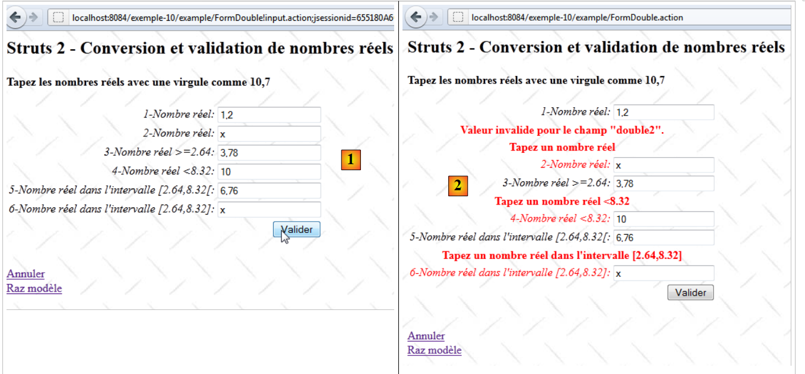
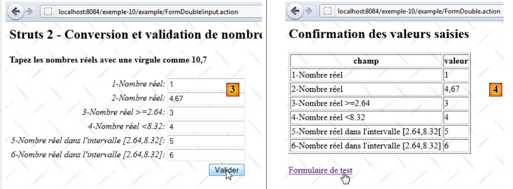
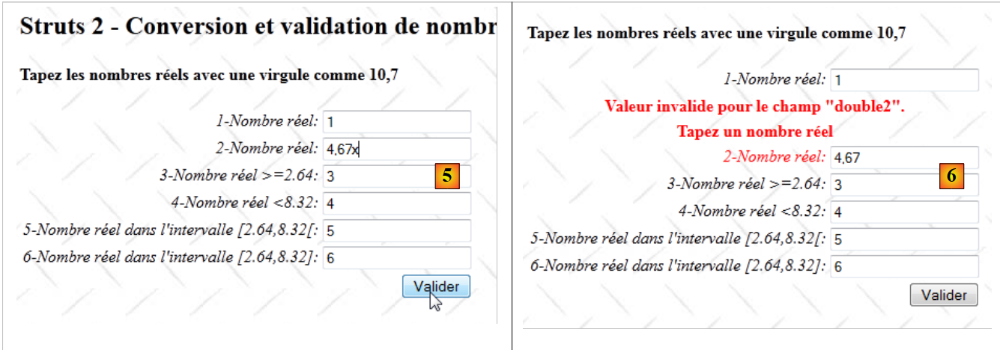

13. Beispiel 10 – Konvertierung und Validierung von reellen Zahlen
Die neue Anwendung ermöglicht die Eingabe von reellen Zahlen:
 |
- in [1], das Eingabeformular
- in [2], die zurückgegebene Antwort
Die Anwendung funktioniert ähnlich wie bei der Eingabe von ganzen Zahlen, daher werden wir nur auf die Punkte eingehen, die sich unterscheiden.
13.1. Das NetBeans-Projekt
Das NetBeans-Projekt lautet wie folgt:
 |
- in [1], die Ansichten der Anwendung
- [Accueil.jsp]: die Startseite
- [FormDouble.jsp]: das Eingabeformular
- [ConfirmationDouble.jsp]: die Bestätigungsseite
- in [2], die Meldungsdatei [messages.properties] und die Hauptkonfigurationsdatei von Struts
- in [3]:
- [FormDouble.java]: die Aktion, die das Formular anzeigt und verarbeitet
- [FormDouble-validation.xml]: die Validierungsregeln für die Aktion [FormDouble]. Diese Datei delegiert diese Validierungen gemäß der soeben beschriebenen Methode an das Modell.
- [FormDoubleModel]: das Modell der Aktion [FormDouble]
- [FormDoubleModel-validation.xml]: Die Validierungsregeln des Modells
- [FormDoubleModel.properties]: die Meldungsdatei des Modells
- [example.xml]: Sekundäre Struts-Konfigurationsdatei
13.2. Die Projektkonfiguration
Das Projekt wird hauptsächlich über die folgende Datei „[example.xml]“ konfiguriert:
<?xml version="1.0" encoding="UTF-8" ?>
<!DOCTYPE struts PUBLIC
"-//Apache Software Foundation//DTD Struts Configuration 2.0//EN"
"http://struts.apache.org/dtds/struts-2.0.dtd">
<struts>
<package name="example" namespace="/example" extends="struts-default">
<action name="Accueil">
<result name="success">/example/Accueil.jsp</result>
</action>
<action name="FormDouble" class="example.FormDouble">
<result name="input">/example/FormDouble.jsp</result>
<result name="cancel" type="redirect">/example/Accueil.jsp</result>
<result name="success">/example/ConfirmationFormDouble.jsp</result>
</action>
</package>
</struts>
Sie entspricht derjenigen, die bereits für die Eingabe von ganzen Zahlen behandelt wurde.
13.3. Die Meldungsdateien
Die Datei [messages.properties] lautet wie folgt:
Accueil.titre=Accueil
Accueil.message=Struts 2 - Conversions et validations
Accueil.FormDouble=Saisie de nombres r\u00e9els
Form.titre=Conversions et validations
FormDouble.message=Struts 2 - Conversion et validation de nombres r\u00e9els
FormDouble.conseil=Tapez les nombres r\u00e9els avec une virgule comme 10,7
Form.submitText=Valider
Form.cancelText=Annuler
Form.clearModel=Raz mod\u00e8le
Confirmation.titre=Confirmation
Confirmation.message=Confirmation des valeurs saisies
Confirmation.champ=champ
Confirmation.valeur=valeur
Confirmation.lien=Formulaire de test
xwork.default.invalid.fieldvalue=Valeur invalide pour le champ "{0}".
Die Datei [FormDoubleModel.properties] lautet wie folgt:
double.format={0,number}
double1.prompt=1-Nombre r\u00E9el
double1.error=Tapez un nombre r\u00E9el
double2.prompt=2-Nombre r\u00E9el
double2.error=Tapez un nombre r\u00E9el
double3.prompt=3-Nombre r\u00E9el >=2.64
double3.error=Tapez un nombre r\u00E9el >=2.64
double4.prompt=4-Nombre r\u00E9el <8.32
double4.error=Tapez un nombre r\u00E9el <8.32
double5.prompt=5-Nombre r\u00E9el dans l''intervalle [2.64,8.32[
double5.error=Tapez un nombre r\u00E9el dans l''intervalle [2.64,8.32[
double6.prompt=6-Nombre r\u00E9el dans l''intervalle [2.64,8.32]
double6.error=Tapez un nombre r\u00E9el dans l''intervalle [2.64,8.32]
Zeile 1 spielt eine wichtige Rolle. Wir werden darauf zurückkommen.
13.4. Das Eingabeformular
Die Ansicht [FormDouble.jsp] sieht wie folgt aus:
<%@ page contentType="text/html; charset=UTF-8" pageEncoding="UTF-8"%>
<%@ taglib prefix="s" uri="/struts-tags" %>
<html>
<head>
<title><s:text name="Form.titre"/></title>
<s:head/>
</head>
<body background="<s:url value="/ressources/standard.jpg"/>">
<h2><s:text name="FormDouble.message"/></h2>
<h4><s:text name="FormDouble.conseil"/></h4>
<s:form name="formulaire" action="FormDouble">
<s:textfield name="double1" key="double1.prompt"/>
<s:textfield name="double2" key="double2.prompt" value="%{#parameters['double2']!=null ? #parameters['double2'] : double2==null ? '' :getText('double.format',{double2})}"/>
<s:textfield name="double3" key="double3.prompt" value="%{#parameters['double3']!=null ? #parameters['double3'] : double3==null ? '' :getText('double.format',{double3})}"/>
<s:textfield name="double4" key="double4.prompt" value="%{#parameters['double4']!=null ? #parameters['double4'] : double4==null ? '' :getText('double.format',{double4})}"/>
<s:textfield name="double5" key="double5.prompt" value="%{#parameters['double5']!=null ? #parameters['double5'] : double5==null ? '' :getText('double.format',{double5})}"/>
<s:textfield name="double6" key="double6.prompt"/>
<s:submit key="Form.submitText" method="execute"/>
</s:form>
<br/>
<s:url id="url" action="FormDouble" method="cancel"/>
<s:a href="%{url}"><s:text name="Form.cancelText"/></s:a>
<br/>
<s:url id="url" action="FormDouble" method="clearModel"/>
<s:a href="%{url}"><s:text name="Form.clearModel"/></s:a>
</body>
</html>
Die Zeilen 13 bis 18 sind die sechs Eingabefelder für reelle Zahlen. Die Felder double2 bis double5 haben ein komplexes Attribut value. Normalerweise sollten die sechs Eingabefelder wie folgt aussehen:
<s:textfield name="double1" key="double1.prompt"/>
<s:textfield name="double2" key="double2.prompt"/>
<s:textfield name="double3" key="double3.prompt"/>
<s:textfield name="double4" key="double4.prompt"/>
<s:textfield name="double5" key="double5.prompt"/>
<s:textfield name="double6" key="double6.prompt"/>
Um bestimmte Probleme zu beheben, die bei den Tests aufgetreten sind, musste die Sache etwas komplizierter gestaltet werden. Vorerst kann der Leser diese Komplexität ignorieren. Wir werden sie später erläutern.
13.5. Die Bestätigungsansicht
Die Bestätigungsansicht [ConfirmationFormDouble.jsp] sieht wie folgt aus:

Ihr Code lautet wie folgt:
<%@ page contentType="text/html; charset=UTF-8" pageEncoding="UTF-8"%>
<%@ taglib prefix="s" uri="/struts-tags" %>
<html>
<head>
<title><s:text name="Confirmation.titre"/></title>
<s:head/>
</head>
<body background="<s:url value="/ressources/standard.jpg"/>">
<h2><s:text name="Confirmation.message"/></h2>
<table border="1">
<tr>
<th><s:text name="Confirmation.champ"/></th>
<th><s:text name="Confirmation.valeur"/></th>
</tr>
<tr>
<td><s:text name="double1.prompt"/></td>
<td><s:text name="double1"/></td>
</tr>
<tr>
<td><s:text name="double2.prompt"/></td>
<td>
<s:text name="double.format">
<s:param value="double2"/>
</s:text>
</td>
</tr>
<tr>
<td><s:text name="double3.prompt"/></td>
<td>
<s:text name="double.format">
<s:param value="double3"/>
</s:text>
</td>
</tr>
<tr>
<td><s:text name="double4.prompt"/></td>
<td>
<s:text name="double.format">
<s:param value="double4"/>
</s:text>
</td>
</tr>
<tr>
<td><s:text name="double5.prompt"/></td>
<td>
<s:text name="double.format">
<s:param value="double5"/>
</s:text>
</td>
</tr>
<tr>
<td><s:text name="double6.prompt"/></td>
<td><s:text name="double6"/></td>
</tr>
</table>
<br/>
<s:url id="url" action="FormDouble!input"/>
<s:a href="%{url}"><s:text name="Confirmation.lien"/></s:a>
</body>
</html>
Die Ansicht [ConfirmationFormDouble.jsp] zeigt lediglich die Vorlage [FormDoubleModel] an. Die Zeilen 47–49 zeigen die Darstellung einer reellen Zahl. Diese Darstellung soll die localisation der Anwendung berücksichtigen. Demnach wird eine reelle Zahl in Frankreich (10,7) anders angezeigt als in Großbritannien (10.7). Dazu verwenden wir das Tag <s:text>, das wir bisher für die Internationalisierung der Anwendung genutzt hatten. Dieses Tag dient somit auch der Lokalisierung.
Hier wird der Nachrichtenschlüssel double.format verwendet. Dieser Schlüssel befindet sich in der Datei [FormDoubleModel.properties]:
double.format={0,number}
Der dem Schlüssel zugeordnete Wert ist hier keine Meldung, sondern ein Anzeigeformat:
- 0 ist ein Parameter, der den anzuzeigenden Wert darstellt. In diesem Fall ist dies das Feld double5 der Vorlage.
- „number“ steht für das Zahlenformat. Es wird an jedes Land angepasst. Ohne dieses Format wird die Zahl 10,7 unabhängig vom Land immer als 10,7 angezeigt.
Das Tag
<s:text name="double.format">
<s:param value="double5"/>
</s:text>
löst die Anzeige der Meldung {0, number} aus, wobei der Parameter double5 (Zeile 2) den Parameter 0 des Formats ersetzt. Somit wird die Vorlage double5 im lokalisierten Zahlenformat angezeigt.
13.6. Die Vorlage [FormDoubleModel]
Die Felder double1 bis double6 des Formulars [FormDouble.jsp] werden in die folgende Vorlage [FormDoubleModel] eingefügt:
package example;
public class FormDoubleModel {
// Konstruktor ohne Parameter
public FormDoubleModel() {
}
// Felder
private String double1;
private Double double2;
private Double double3;
private Double double4;
private Double double5;
private String double6;
// Modell-RAZ
public void clearModel() {
double1 = null;
double2 = null;
double3 = null;
double4 = null;
double5 = null;
double6 = null;
}
// Getter und Setter
...
}
- Die Felder double1 und double6 sind vom Typ String
- Die übrigen Felder haben den Typ Double
13.7. Die Validierung des Modells
Die Validierung des Modells wird durch zwei Dateien gesteuert: [FormDouble-validation.xml] und [FormDoubleModel-validation.xml].
Die Datei [FormDouble-validation.xml] delegiert die Validierungen an [FormDoubleModel-validation.xml]:
<!--
<!DOCTYPE validators PUBLIC "-//OpenSymphony Group//XWork Validator 1.0.2//
EN" "http://www.opensymphony.com/xwork/xwork-validator-1.0.2.dtd">
-->
<!DOCTYPE validators PUBLIC "-//OpenSymphony Group//XWork Validator 1.0.2//
EN" "http://localhost:8084/Beispiel-10/Beispiel/xwork-validator-1.0.2.dtd">
<validators>
<field name="model" >
<field-validator type="visitor">
<param name="appendPrefix">false</param>
<message/>
</field-validator>
</field>
</validators>
Diese Datei ist uns bereits bekannt.
Die Datei [FormDoubleModel-validation.xml] enthält die folgenden Validierungsregeln:
<!--
<!DOCTYPE validators PUBLIC "-//OpenSymphony Group//XWork Validator 1.0.2//
EN" "http://www.opensymphony.com/xwork/xwork-validator-1.0.2.dtd">
-->
<!DOCTYPE validators PUBLIC "-//OpenSymphony Group//XWork Validator 1.0.2//
EN" "http://localhost:8084/Beispiel-10/Beispiel/xwork-validator-1.0.2.dtd">
<validators>
<field name="double1" >
<field-validator type="requiredstring" short-circuit="true">
<message key="double1.error"/>
</field-validator>
<field-validator type="regex" short-circuit="true">
<param name="expression">^[+|-]*\s*\d+(,\d+)*$</param>
<param name="trim">true</param>
<message key="double1.error"/>
</field-validator>
</field>
<field name="double2" >
<field-validator type="required" short-circuit="true">
<message key="double2.error"/>
</field-validator>
<field-validator type="conversion" short-circuit="true">
<message key="double2.error"/>
</field-validator>
</field>
<field name="double3" >
<field-validator type="required" short-circuit="true">
<message key="double3.error"/>
</field-validator>
<field-validator type="conversion" short-circuit="true">
<message key="double3.error"/>
</field-validator>
<field-validator type="double" short-circuit="true">
<param name="minInclusive">2.64</param>
<message key="double3.error"/>
</field-validator>
</field>
<field name="double4" >
<field-validator type="required" short-circuit="true">
<message key="double4.error"/>
</field-validator>
<field-validator type="conversion" short-circuit="true">
<message key="double4.error"/>
</field-validator>
<field-validator type="double" short-circuit="true">
<param name="maxExclusive">8.32</param>
<message key="double4.error"/>
</field-validator>
</field>
<field name="double5" >
<field-validator type="required" short-circuit="true">
<message key="double5.error"/>
</field-validator>
<field-validator type="conversion" short-circuit="true">
<message key="double5.error"/>
</field-validator>
<field-validator type="double" short-circuit="true">
<param name="minInclusive">2.64</param>
<param name="maxExclusive">8.32</param>
<message key="double5.error"/>
</field-validator>
</field>
<field name="double6" >
<field-validator type="requiredstring" short-circuit="true">
<message key="double6.error"/>
</field-validator>
<field-validator type="regex" short-circuit="true">
<param name="expression">^[+|-]*\s*\d+(,\d+)*$</param>
<param name="trim">true</param>
<message key="double6.error"/>
</field-validator>
</field>
</validators>
- Die Regel in den Zeilen 12–21 überprüft, ob das Eingabefeld double1 dem Muster eines regulären Ausdrucks entspricht, der eine reelle Zahl darstellt.
- Die Regel in den Zeilen 23–30 überprüft, ob das Eingabefeld double2 in eine Double-Reelle-Zahl konvertiert werden kann.
- Die Regel in den Zeilen 32–43 prüft, ob das Eingabefeld double3 in eine Double-Reelle-Zahl >= 2,64 konvertiert werden kann. Dabei ist zu beachten, dass die angelsächsische Schreibweise für reelle Zahlen verwendet werden muss.
- Die Regel in den Zeilen 45–56 prüft, ob das Eingabefeld double4 in einen Double-Wert < 8,32 konvertiert werden kann.
- Die Regel in den Zeilen 58–70 überprüft, ob das Eingabefeld double5 in eine Double-Reelle im Intervall [2,64; 8,32] konvertiert werden kann.
- Die Regel in den Zeilen 72–80 prüft, ob das Feld double6 dem Muster eines regulären Ausdrucks entspricht, der eine reelle Zahl darstellt.
Sobald die Datei [FormDoubleModel-validation.xml] vom Validierungs-Interceptor verarbeitet wurde, lässt dieser die Methode validate der Aktion [FormDouble] ausführen, sofern diese existiert. Wir werden sie zusammen mit der gesamten Aktion vorstellen.
13.8. Die Aktion [FormDouble]
Die Aktion [FormDouble] lautet wie folgt:
package example;
import com.opensymphony.xwork2.ActionSupport;
import com.opensymphony.xwork2.ModelDriven;
import java.util.Map;
import org.apache.struts2.interceptor.SessionAware;
import org.apache.struts2.interceptor.validation.SkipValidation;
public class FormDouble extends ActionSupport implements ModelDriven, SessionAware {
// Konstruktor ohne Parameter
public FormDouble() {
}
// Aktionsvorlage
public Object getModel() {
if (session.get("model") == null) {
session.put("model", new FormDoubleModel());
}
return session.get("model");
}
@SkipValidation
public String clearModel() {
// Löschung des Modells
((FormDoubleModel) getModel()).clearModel();
// Ergebnis
return INPUT;
}
public String cancel() {
// Das Modell wird bereinigt
((FormDoubleModel) getModel()).clearModel();
// Ergebnis
return "cancel";
}
// SessionAware
Map<String, Object> session;
public void setSession(Map<String, Object> session) {
this.session = session;
}
// Validierung
@Override
public void validate() {
// Ist die doppelte Eingabe gültig?
if (getFieldErrors().get("double6") == null) {
// Das Komma in der Zeichenfolge „double6“ wird durch einen Punkt ersetzt
String strDouble6 = (((FormDoubleModel) getModel()).getDouble6()).replace(',', '.');
// Zeichenkette --> double
double double6 = Double.parseDouble(strDouble6);
// Überprüfung
if (double6 < 2.64 || double6 > 8.32) {
addFieldError("double6", getText("double6.error"));
}
}
}
}
Die Aktion [FormDouble] ist nach dem gleichen Muster aufgebaut wie die Aktion [FormInt]. Wir werden nur die Methode validate erläutern. Zur Erinnerung: Die Methode validate wird nach der Verarbeitung der Validierungsdatei [FormDoubleModel-validation.xml] und vor der Ausführung der Methode execute ausgeführt.
- Zeile 48: Wenn im Feld double6 bereits Fehler vorliegen, wird nichts weiter unternommen.
- Zeile 50: Es lag eine Zeichenfolge der Form 45,67 vor. Diese wurde im Feld double6 des Modells gespeichert. Das Komma wird durch einen Punkt ersetzt, sodass 45.67 entsteht.
- Zeile 52: Die Zeichenfolge 45.67 wird in eine Double-Reelle-Zahl umgewandelt. Das muss funktionieren, da die Zeichenfolge double6 dem Format einer reellen Zahl entspricht.
- Zeile 54: Es wird überprüft, ob die erhaltene Double-Reelle-Zahl im Intervall [2.64, 8.32] liegt.
- Zeile 55: Ist dies nicht der Fall, wird die Fehlermeldung mit dem Schlüssel double6.error an das Feld double6 angehängt. Diese Meldung ist in der Datei [FormDoubleModel.properties] zu finden. Sie wird angezeigt, wenn das fehlerhafte Formular erneut angezeigt wird.
13.9. Letzte Details
Nun zurück zur Komplexität der Eingabefelder des Formulars [FormDouble.jsp]. Wir werden uns mit dem Feld double2 befassen. Die Überlegungen gelten auch für die Felder double3 bis double5, die ein Modell vom Typ Double haben. Für die Felder double1 und double6, die eine Vorlage vom Typ String haben, gibt es kein Problem.
Das Eingabefeld double2 lautet wie folgt:
<s:textfield name="double2" key="double2.prompt" value="%{#parameters['double2']!=null ? #parameters['double2'] : double2==null ? '' :getText('double.format',{double2})}"/>
Beginnen wir mit dem einfachsten Tag:
<s:textfield name="double2" key="double2.prompt"/>
und schauen wir uns an, was passiert:
 |
- In [1] wird die korrekte Zahl double2 validiert. Auf dem Screenshot ist es nicht sehr gut zu erkennen, aber wir haben die Zahl mit einem Komma eingegeben.
- Bei [2] die Bestätigungsansicht. Die Eingabe double2 hat die Validierungstests bestanden. Die Zahl wird mit einem Komma angezeigt.
 |
- In [3] kehrt man zum Formular zurück
- in [4], das Formular. Was auf dem Screenshot nicht gut zu erkennen ist: Die Zahl double2, die ursprünglich 4,32 betrug, ist nun 4.32 mit einem Dezimalpunkt.
 |
- in [5], das Formular wird erneut übermittelt, ohne etwas zu ändern
- zu [6]; im Feld double2 wird ein Fehler gemeldet.
Das Problem ist folgendes:
- Ursprünglich wurde in [1] die Eingabezeichenfolge „4,32“ erfolgreich in die reelle Zahl 4,32 umgewandelt. Das bedeutet, dass die Umwandlung von String in Double erfolgreich war und Struts in diesem Sinne die Ländereinstellung berücksichtigt, in diesem Fall Frankreich.
- Das neue Formular [4] zeigt im Feld double2 den Wert 4,32 an. Da die Anzeige nicht lokalisiert wurde, wird sie standardmäßig im angelsächsischen Format „c.a.d“ mit einem Dezimalpunkt angezeigt. Bei der Konvertierung von „Double“ in „String“ berücksichtigt Struts also die Ländereinstellung nicht mehr, sonst hätte es „4,32“ mit einem Komma angezeigt.
Das ist, gelinde gesagt, inkonsistent. Aber egal, wir werden die Anzeige der Zahl 4,32 lokalisieren. Das Eingabe-Tag sieht dann wie folgt aus:
<s:textfield name="double2" key="double2.prompt" value="%{getText('double.format',{double2})}"/>
Das Attribut value gibt den Wert an, der im Feld double2 angezeigt werden soll. Dieser Wert stammt aus einem Ausdruck OGNL. Zur Erinnerung: Die Definition des Schlüssels double.format in der Datei [FormDoubleModel.properties] lautet wie folgt:
double.format={0,number}
Mit der Methode getText('Schlüssel') lässt sich die zu einem Schlüssel gehörende Meldung abrufen. Der Schlüssel wird in der Datei gesucht, die der aktuellen Ländereinstellung entspricht. Wäre diese also „es“ (Spanien), würde der Schlüssel double.format in der Datei [FormDoubleModel_es.properties] gesucht werden.
Mit der Methode getText('Schlüssel', {param0, param1, ...}) lässt sich eine parametrisierte Meldung abrufen. Die Meldung
ist eine durch den Parameter 0 parametrisierte Nachricht. Dabei handelt es sich um einen Positionsparameter. Die Methode getText('double.format', {double2}) weist dem Parameter 0 die Zahl double2 zu. Schließlich wird der Wert von double2 im lokalisierten numerischen Format abgefragt. In Frankreich wird die Zahl 4,56 als Zeichenfolge „4,56“ lokalisiert.
Nach dieser Umwandlung werden die Tests erneut durchgeführt.
 |
Bereits bei der ersten Anzeige des Formulars tritt bei [1] eine Anomalie auf. Kehren wir zum Tag zurück:
<s:textfield name="double2" key="double2.prompt" value="%{getText('double.format',{double2})}"/>
Bei der ersten Anzeige lautet der Wert des Modells double2 „null“, ein nicht-numerischer Wert. Wir passen das Tag wie folgt an:
<s:textfield name="double2" key="double2.prompt" value="%{double2==null ? '' : getText('double.format',{double2})}"/>
Diesmal wird geprüft, ob double2==null gilt. Wenn ja, wird eine leere Zeichenfolge angezeigt.
Nach dieser Änderung setzen wir die Tests fort:
 |
 |
Die Bildschirmausgaben von [1] bis [4] zeigen, dass das Problem, das wir beheben wollten, gelöst ist:
- In [1] gibt man 4,67
- in [2] wurde diese Zahl akzeptiert
- in [3] wird sie erneut als 4,67 mit Komma angezeigt, was durch [4] bestätigt wird.
Leider sind die Probleme damit noch nicht behoben. Sehen wir uns die folgende Sequenz an:
 |
- In [5] wird ein Zeichen hinzugefügt, um double2
- In [6] haben die Validierungstests ihre Arbeit getan und der Fehler wird gemeldet. Nur ist die in [6] angezeigte Zeichenfolge nicht die fehlerhafte, sondern der aktuelle Wert des Modells double2. Der eingegebene Wert ist verloren gegangen.
Beim Wechsel von [5] zu [6] wird die Anfrage nicht vollständig ausgeführt. Sie wird vom Validierungs-Interceptor gestoppt. Bei [6] wurde der Wert des Modells double2 angezeigt, das aufgrund dieses Abbruchs keinen neuen Wert erhalten hat. Es wird also sein vorheriger Wert angezeigt, obwohl die eingegebene Zeichenfolge hätte angezeigt werden müssen. Die Parameter einer Abfrage sind über die Notation #parameters['param'] einsehbar. Das Eingabefeld double2 wird wie folgt angepasst:
<s:textfield name="double2" key="double2.prompt" value="%{#parameters['double2']!=null ? #parameters['double2'] : double2==null ? '' : getText('double.format',{double2})}"/>
Der angezeigte Wert des Feldes double2 wird wie folgt berechnet: Wenn der Parameter „double2“ vorhanden ist, wird er angezeigt, andernfalls wird die Vorlage double2 angezeigt. Der Leser wird gebeten, zu testen, ob diese neue Version des Tags die aufgetretenen Probleme behebt.
13.10. Conclusion
Es ist erstaunlich, dass die Eingabe von reellen Zahlen mit Gültigkeitsprüfung so kompliziert ist... Vielleicht habe ich etwas in der Dokumentation übersehen?